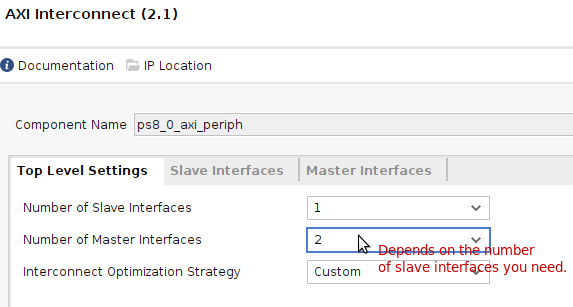
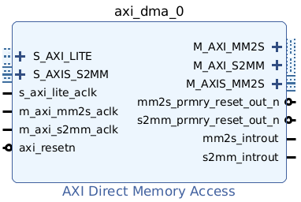
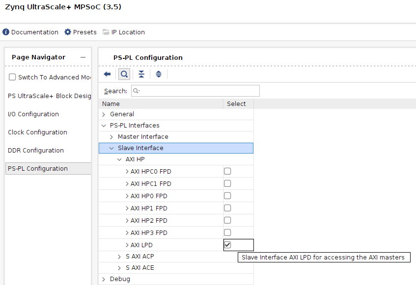
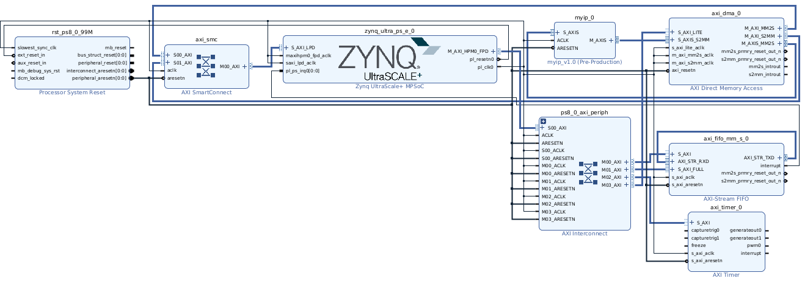
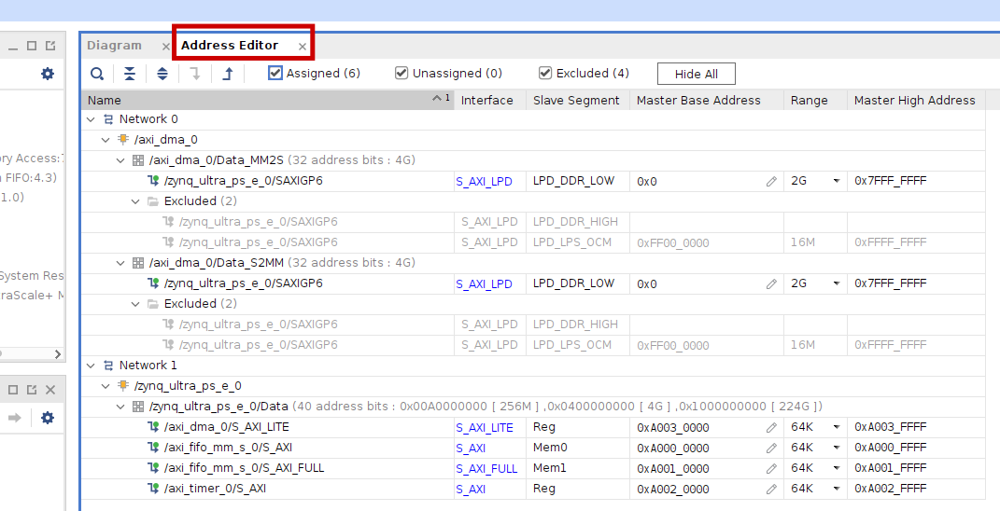

Coprocessor Integration using AXI DMA
In this page, you will learn to integrate the AXIS coprocessor using AXI Direct Memory Access (DMA) instead of AXI FIFO. We will use the simple AXIS coprocessor designed in Lab 1 (and packaged in Lab 3) or the one created and packaged using HLS in Lab 4. In any case, it is a good idea to have the functionality tested using AXI Stream FIFO first.
When using AXI DMA, the processor only supplies (via AXI Lite, not AXI Stream) the starting address and the size/amount of data to be transferred from the memory to the coprocessor (or vice versa), and it is the DMA controller that reads memory directly and passes it to the coprocessor via AXI Stream (or vice versa). The processor is not involved in the transfer of data directly, i.e., it does not do repeated load-store (LDR/lw-STR/sw) to do bulk data transfer.
Here, we will be using the Xilinx AXI DMA IP as the module that connects the coprocessor to the rest of the system. You can find the specification of AXI DMA here.
You can start with a new project or from an existing project. As most of you would be reaching this step from an existing project, which would have the coprocessor connected using AXI Stream FIFO. In the future, if you are starting a new project and plan to use AXI DMA, you do not need AXI Stream FIFO in your design at all. It is also fine to delete AXI Stream FIFO from the project (instructions later), which can save some hardware and synthesis time.
It is perfectly fine to retain AXI Stream FIFO + coprocessor, and use another instance of the coprocessor for DMA, if you are doing a combined design, i.e., a single design with FIFO-connected coprocessor + one or more DMA-connected coprocessors.
On this page, however, we keep the AXI Stream FIFO and connect it in loopback mode, rendering it vestigial.
The following instructions also assume that the coprocessor is already added/available in the IP Integrator canvas. If not, add it from the IP Catalog.

Now, make/modify the following connections of AXI Stream FIFO.
Delete myip_0/M_AXIS <-> axi_fifo_mm_s_0/AXI_STR_RXD connection.
Delete myip_0/S_AXIS <-> axi_fifo_mm_s_0/AXI_STR_TXD connection.
Make a connection from axi_fifo_mm_s_0/AXI_STR_TXD <-> axi_fifo_mm_s_0/AXI_STR_RXD. This will make the AXI Stream FIFO in loopback mode and hence useless.
Alternative: Delete the AXI Stream FIFO peripheral altogether. This can be done by simply selecting the block via single-click and pressing delete (or from the right-click menu). If you do so, you need to double-click the AXI Interconnect and reduce the number of Master interfaces by 1; e.g., if it was originally 3, we need to make it 2; if it was originally 2, we need to make it 1. This is because the AXI Stream FIFO peripheral has two AXI slave interfaces (S_AXI and S_AXI_FULL, as we enabled AXI as well in addition to the original AXI Lite interface), whereas AXI DMA requires only one AXI slave interface (S_AXI_LITE).

This can cause some existing AXI slave connections to be broken (e.g., M0x_AXI of the AXI Interconnect to S_AXI of the peripheral), which can be easily fixed via connection automation.
Connecting the Coprocessor using DMA
From the IP catalog, add the peripheral titled AXI Direct Memory Access. Double-click it, uncheck Enable Scatter Gather Engine, and click OK. It will look like the figure below.

The S_AXI_LITE is the AXI-Lite slave interface that receives the commands (how much data is to be transferred from/to which address etc) from the ARM core in PS. Running connection automation will connect it, as well as the s_axi_lite_aclk and axi_resetn.
MM2S: When data has to be transferred to the coprocessor, the ARM core specifies the range of memory (starting address, size of data to be sent) to the DMA peripheral by writing to the DMA peripheral registers through the S_AXI_LITE interface. The DMA controller reads the memory via the M_AXI_MM2S interface (this is the AXI master interface, which has only read channels), and sends the data to the S_AXIS of the coprocessor via the M_AXIS_MM2S.
S2MM: When data has to be received from the coprocessor, the ARM core specifies the range of memory (array starting address, length of data to be received) to the DMA peripheral by writing to the DMA peripheral registers through the S_AXI_LITE interface. The DMA controller receives the data from M_AXIS of the coprocessor via the S_AXIS_S2MM, stores it in an internal buffer, and then writes it to the memory via the M_AXI_S2MM interface (this is the AXI master interface, which has only write channels).
First, make the M_AXIS_MM2S <->S_AXIS and M_AXIS <-> S_AXIS_S2MM connections to connect the coprocessor/myip and the DMA. You can now run connection automation, which will connect ACLK and ARESETN of myip.
The DDR memory controller is implemented in the PS, which requires a slave AXI interface in PS to receive the address and read/write commands from the AXI DMA master interfaces, i.e., M_AXI_S2MM and M_AXI_MM2S. For this, we need to enable one of the Slave Interface > AXI HP (let's say, AXI HPC0 FPD) in the PS-PL configuration of the Zynq Ultrascale+ MPSoC IP/zynq_ultra_ps_e_0. Double-click the Zynq PS IP > PS-PL Configuration> Slave Interface > AXI HP > AXI HPC0 FPD, and then OK. A new interface called S_AXI_HPC0_FPD will appear on the Zynq Ultrascale+ MPSoC IP block diagram in the IP Integrator canvas.

We now need to connect M_AXI_S2MM and M_AXI_MM2S to S_AXI_HPC0_FPD. This will have to be done using an AXI Interconnect or AXI SmartConnect. This can be done through connection automation twice. When you run the connection automation once, it will make only one connection - M_AXI_MM2S→ S_AXI_HPC0_FPD (if M_AXI_MM2S is selected in Options > Master Interface in the connection automation dialog), and the corresponding m_axi_mm2s_aclk. The connection automation banner will still be there. Run connection automation again. This time, it will add an interconnect and make the M_AXI_S2MM→ S_AXI_HPC0_FPD, as well as the m_axi_s2mm_aclk connection.
*AXI Interconnect and AXI SmartConnect are functionally similar. The latter is newer and more optimized, though the connection automation does not always include it.
Overall, the connections should be as shown below, at least those relevant to AXI DMA. There could be differences in the overall block design and connections depending on the exact peripherals you have in the design.

Have a look at the Address Editor tab too. It should generally be fine as long as the AXI (not AXIS - AXIS connections were done manually anyway and have no concept of addresses/memory map) connections are done via connection automation. If there were any manual modifications you made to AXI connections, appropriate manual modifications may be needed here.
In particular, ensure that in which zynq_ultra_ps_e_0 is the master, all S_AXIs are given proper, non-conflicting addresses. Also, ensure that in the network where axi_dma_0 is the master, S_AXI_HPC0_FPD with the slave segment HPC0_DDR_LOW is included (i.e., not excluded) for both axi_dma_0/Data_MM2S as well as axi_dma_0/Data_S2MM. This is to ensure that the AXI DMA peripheral can read as well as write (respectively) the DDR memory.

We are done with the block design.
The rest of it is pretty standard, and you should know the drill by now.
Export hardware, including bitstream.
Open Vitis > create a new workspace (using the previous one is also ok) > create a new platform project using the new .xsa file (upgrading the previous one is ok too), > create an application project.
The application project (say, Hello World) main file contents should be replaced by test_dma_myip_v1_0.c to test the coprocessor for adding numbers. Note the close parallel it has with test_fifo_myip_v1_0.c. You can make appropriate changes to this file to deal with different input and output sizes if your coprocessor functionality is different.
Now, create a run configuration, open the serial console program (e.g., RealTerm), and run.
You can also use interrupts like that described for AXI Stream FIFO.
The built-in (BSP) example (simple poll) works too with appropriate modifications, but it uses hard-coded addresses and uses memory locations without allocating memory in the code. Cache-related stuff becomes quite messy if the invalidation has side effects, that is, other variables in the same cache block get affected. So keeping it away from the range of memory used by the rest of the program is a reasonably good choice, though this kind of memory allocation will make a memory safety advocate cringe (but ok considering that user-level programs typically do not do DMA directly - it is typically an OS function).
Debugging tip: DMA in a system with cache enabled gives several headaches. Throw interrupts into the mix, and you could run into some hard-to-debug issues. One simple starting point in debugging DMA-related issues is to uncomment Xil_DCacheDisable(). If things work, the issues are cache-related. Of course, you wouldn't want to leave the cache disabled in a real-world system for performance reasons, but it would be a good first step in debugging DMA-related issues.
AXI DMA vs AXI Stream FIFO
AXI DMA implemented this way, while still likely faster than AXI Stream FIFO, won't be making full use of DMA's potential. In our case, the CPU is doing nothing while waiting for the DMA transfer to finish. In a more real-life scenario, the CPU will execute something else (another thread) in the meantime, using the data present in the cache, or through some form of intermittent memory access - read here. The thread that is waiting for the DMA transfer to complete will be woken up only when the DMA controller raises an interrupt to signal to the CPU that the transfer is complete.
Another couple of questions to ponder:
- AXI DMA does not need a buffer (and certainly not a big internal buffer), unlike AXI Stream FIFO. Why?
- AXI DMA has an AXI LITE interface, whereas AXI Stream FIFO should have a full AXI interface for performance reasons. Why?